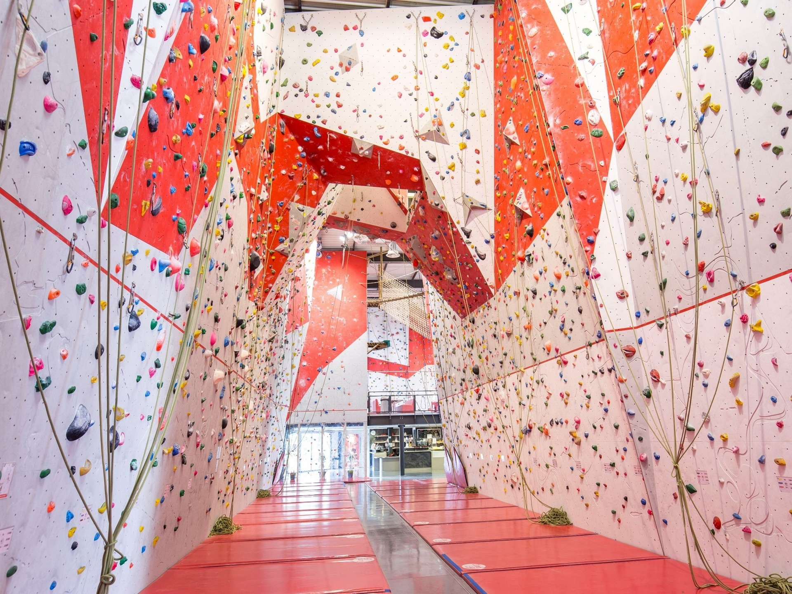
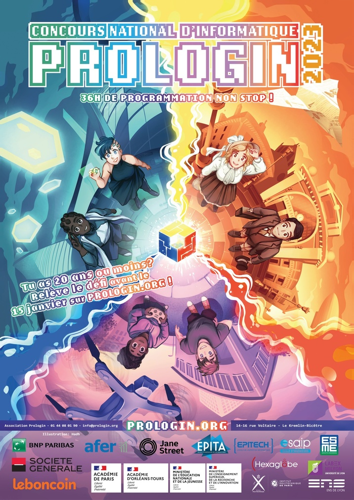

Bonjour, moi c'est léo
Sur cette page je vais vous présenter les différentes choses à savoir sur moi.
Mon parcours scolaire
Etudes Supérieur
Actuellement je suis en IUT Info à Aix-en-Provence.
Lycée / Bac
De 2019 à 2022, j'était à Saint-Maximin-la-sainte-baume pour passer mes années de lycées. Je les ai poursuivie dans la voie général avec comme spécialité Math et NSI.
Mes concours
Concours Prologin 2021/2022 11ème
C’est un concours national d’algorithmie. Il se déroule en 3 étapes. Les qualifications, la demie finale et un final. La final se déroule à Paris lors d’une épreuve d’intelligence artificiel de 36h, à la fin les 10 premiers doivent passer un oral pour les départager.
Concours Général des lycées 2021/2022
C’est un concours d’excellence poussant à l’extrême le programme de chaque spécialitées. Seul les premiers connaissent leurs scores ( j’en fait surtout pas partie ).
Mes passions
l'escalade
Je pratique ce sport depuis mes 8 ans. Malgrès de longue pose dû au covid ou autre évènement j'en fait toujours actuellement de façon régulière. J'en fait tous les 2 jours en moyenne.
Les animaux
Vivant dans la campagne, j'ai toujours eu au moins un chat et un chien mais aujourd'hui j'ai un bassin, 2 aquariums, des poules, un chien et 2 chats.
Mes différents projets avenir
Etudes
Dans le cadre où je fini les 3 années de l'IUT Info, j'ai pour projet d'aller en master spécialisé dans l'IA voir un double master pour spécialisé un autre domaine.

Concours
Comme l'année dernière j'ai décidé de me réincrire au concour Prologin 2022/2023 afin d'avoir le top 10 cette fois-ci.
